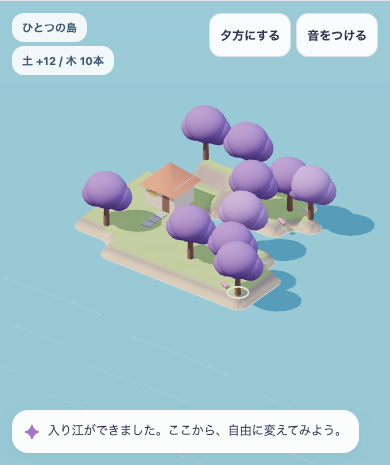
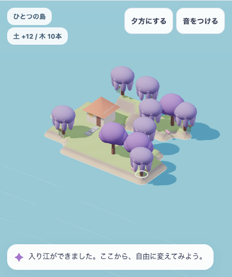
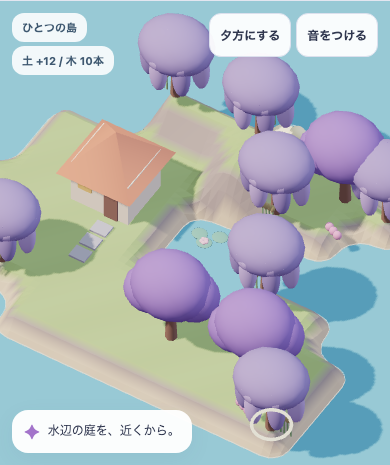
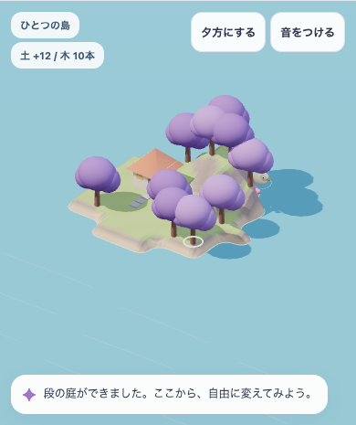
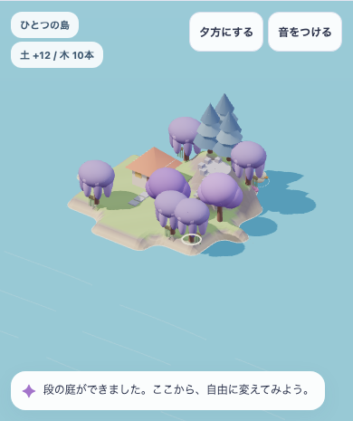
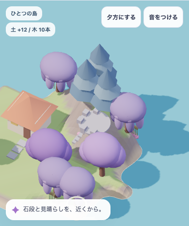
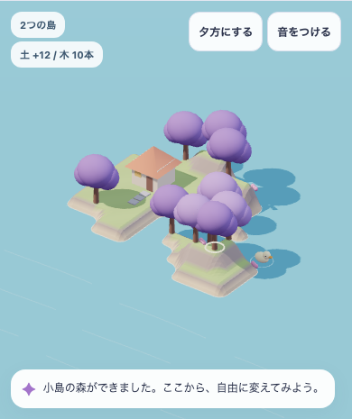
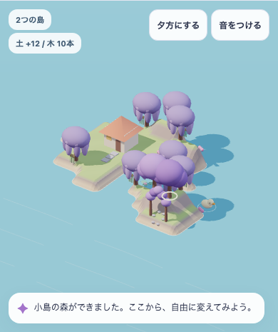
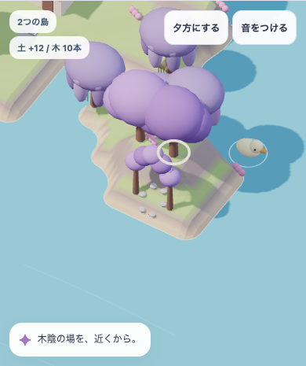
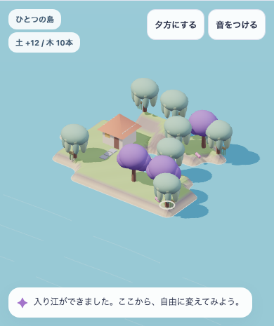

ぽこもこの島づくり · 実際に操作して作った比較
形を変えたら、何が生まれる？
同じ初期島・家1軒・土の正味増分12段・木10本から、3つの形を編集して作りました。「環境の反応なし／あり」の6条件、緑寄りと紫を残す配色、全景と近景を試しています。
下の各行は同じ地形・木の位置・昼の光です。左と中央は同じカメラ。「近くで見る」だけは、その場所へカメラを寄せています。画像を開くと元の実画面が見られます。
1. 入り江 — 水際で木と草が変わる






画面からの判断：地形に沿う植生は有効。ただし、水面の余白と岸の見え方を詰める必要があります。睡蓮を増やすだけで全景の弱さは埋まりません。
2. 段の庭 — 高さが、見晴らしになる






画面からの判断：今回、形の違いが最も読み取りやすい案。盛る操作が、樹形と見晴らしの両方へ返る方向を残します。建築・滝・住人の使い方はまだ不足しています。
3. 小島の森 — 木の間に、入れる場所を残す






画面からの判断：木の本数だけでは足りず、木のまとまりと空いた地面を一緒に扱う必要があります。通り道と利用の接続は次の別検証です。
配色も試した — 環境色を強める／紫を残す

地形・植生支持位置のソースhashは両試行で一致。家の屋根と水面の同じ小領域を比較し、RGB差が0であることを確認しました。独立した利用者の好みを測った結果ではありません。
目標の美術との距離

今回残す方向は、地形・植生・空地の組合せと、全景から場所へ寄れる見方です。固有の大樹・回廊・建物、水の流れ、素材の細部、住人の行動はまだ足りません。美術は未採用、子どもの無説明理解・遊び続けるかは未観察です。
検証の範囲と版
候補 island-shape-experiments-v1 / 配布 standalone-study-only / revision 798b289f611c04b7。390×844・768×1024、空のChromium context、reduced motion、音初期off、service workerなし。14項目のモデル検査、6旅程×9項目のブラウザ検査がPASS。検証記録 · 入力hash
音はページの「土・水・葉」で試せます。発音制御と信号の有限性を確認しましたが、実スピーカーの聴感は評価していません。通常保存・学習・所有・住人・PWA・本番公開の検証ではありません。